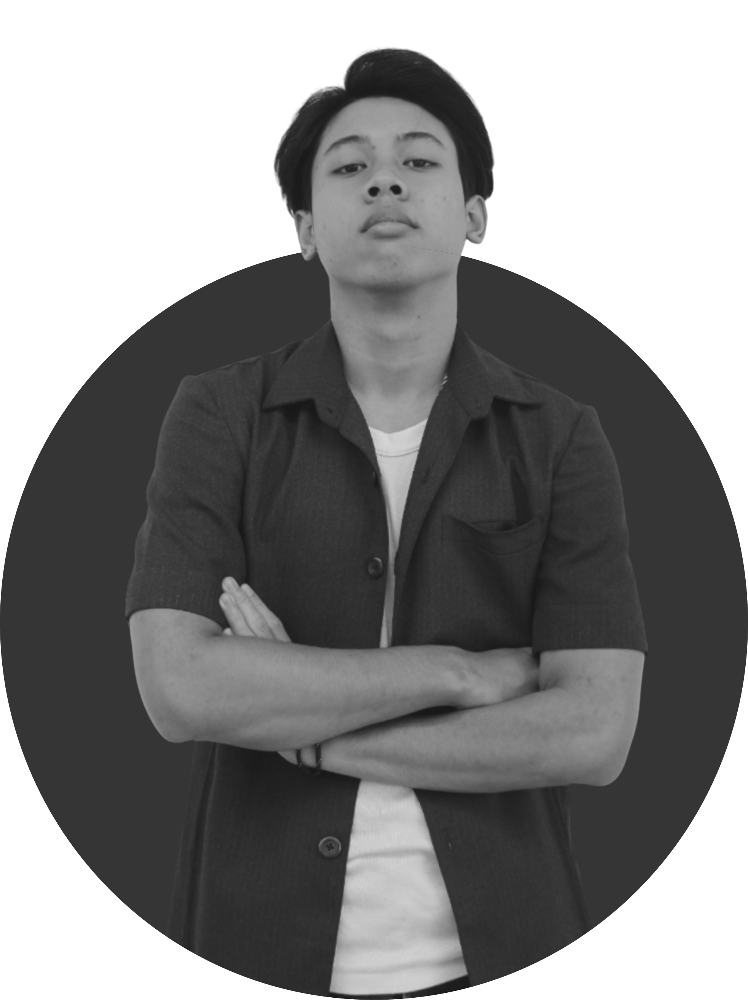
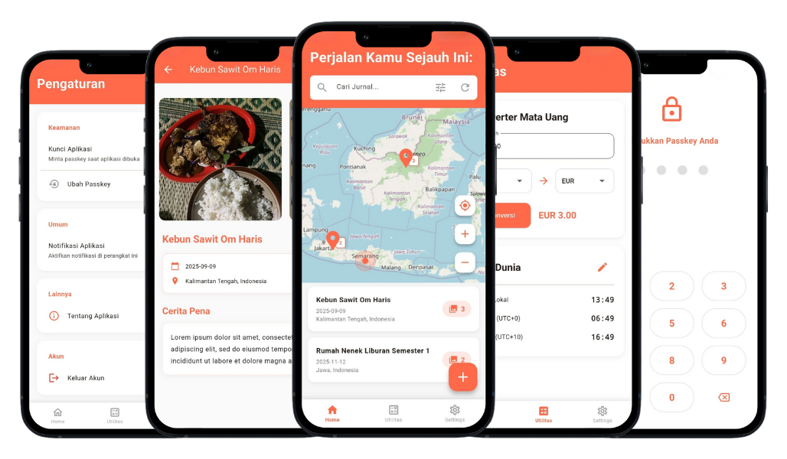
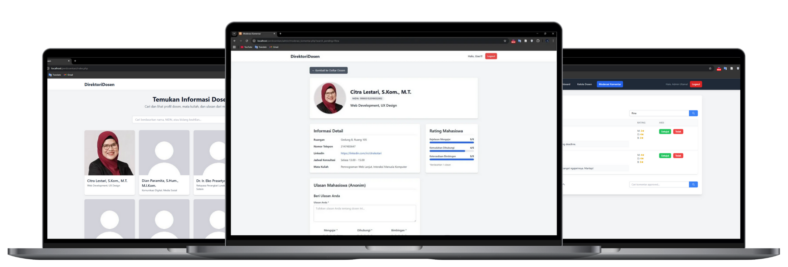
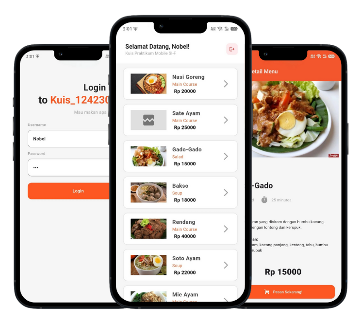
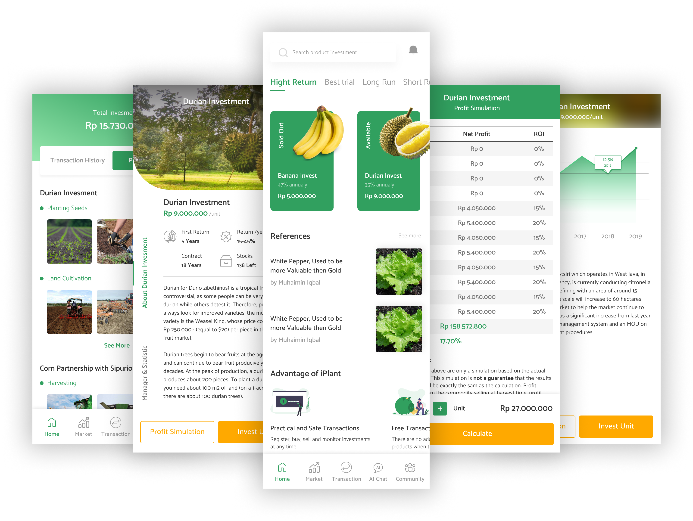
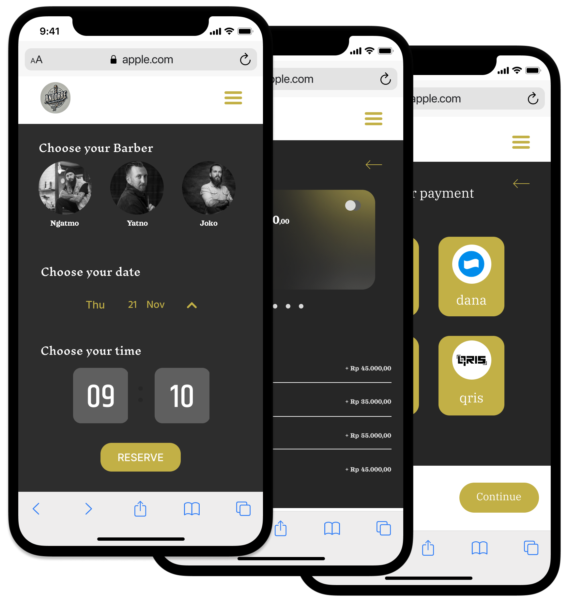
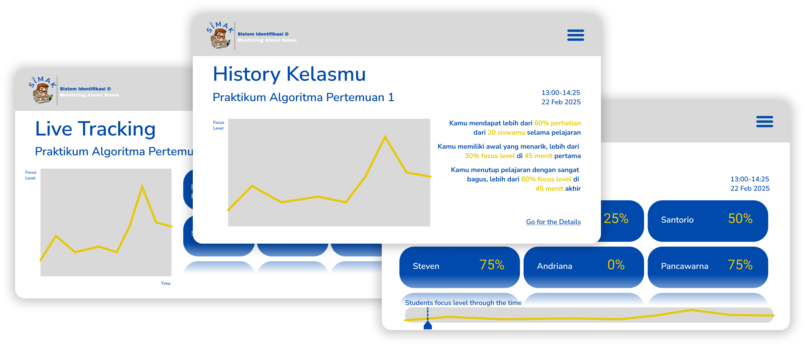
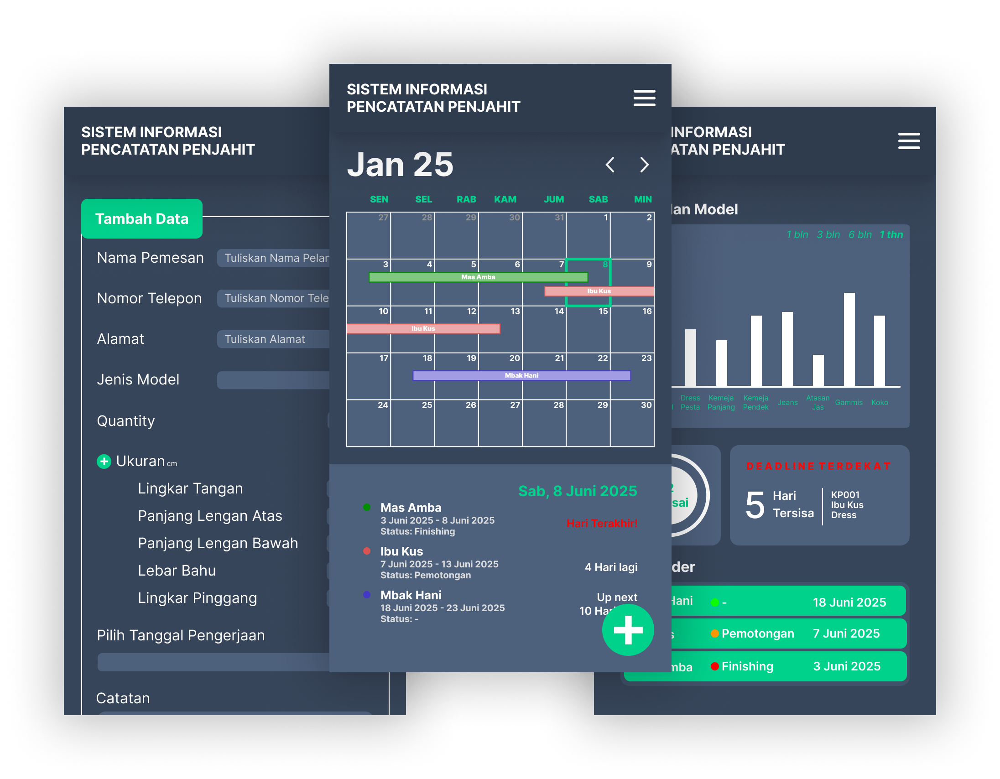

HELLO THERE!
I'M NOBEL
WHAT AM I??
- STUDENT
- PODCASTER
- GRAPHIC
DESIGNER - PROJECT
MANAGER - PUBLIC
RELATIONS - SYSTEM
ANALYST - UI/UX
DESIGNER - VIDEO
EDITOR - TECH
ENTHUSIAST - ULTRAMAN,
AND MANY MORE - STUDENT
That's
it??
ABOUT ME
MY PROJECTS
My past projects


Jejak Pena
November 2025
Perancangan dan pengembangan aplikasi diary digital untuk mencatat dan mendokumentasikan perjalanan liburan.

Direktori Dosen
Oktober 2025
Pengembangan WebApp PHP untuk menampilkan data dosen secara lengkap dengan review dan penilaian dari Mahasiswa, juga Admin dengan fungsi moderasi dan CRUD.

Pesan Yuk!
September 2025
Pengembangan mobile app Flutter untuk penjualan makanan secara online.

DanaTani
Juli 2025
Perancangan perangkat lunak pendukung sistem informasi pendanaan usaha mikro di bidang pertanian berbasis mobile application untuk meningkatkan aksesibilitas dan kemudahan pengguna.

Andre Barbershop
June 2025
Perancangan antarmuka WebApp Andre Barbershop, sistem informasi manajemen pemesanan layanan potong rambut secara online.

SIMAK
May 2025
Perancangan perangkat lunak pendeteksi tingkat kefokusan siswa dalam pembelajaran di kelas berbasis analisis visual menggunakan metode YOLO dan Fuzzy Logic.

SIM - BUTIK
April 2025
Pembuatan dan perancangan WebApp pendukung efisiensi pengelolaan operasional dan peningkatan kualitas layanan butik dalam menangani pesanan secara fleksibel dan terorganisir.

Pantau Api
July 2024
Pembuatan dan perancangan website penyedia informasi tentang kebakaran hutan dan lahan di Indonesia, pelaporan, juga edukasi pencegahan kebakaran.